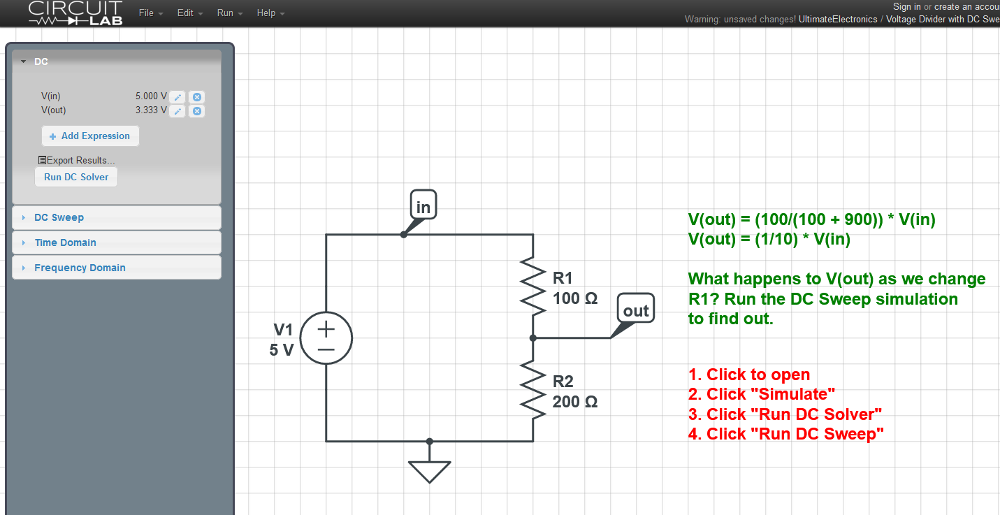
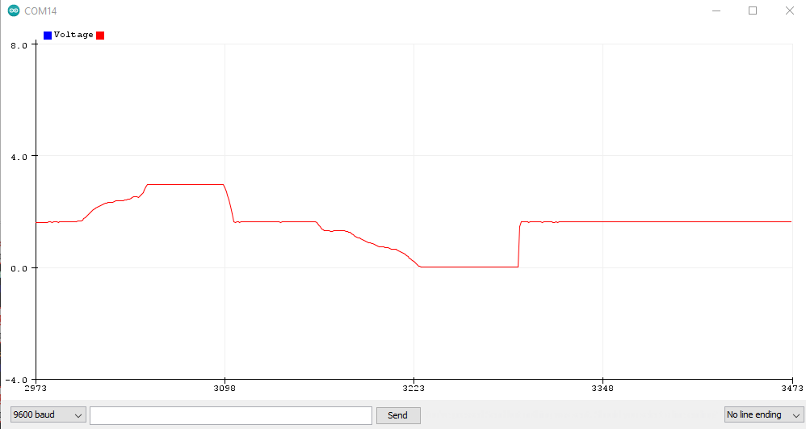

analog airspeed sensor voltage divider for ardupilot
I have a handful of old analog pitot airspeed sensors that I would like to use, but takes a little work to safely use them without frying your board. This was also a project to help me understand how to set up generic analog sensors using voltage dividers. I would not necessarily recommend buying analog sensors in 2021, as they are hard to find, and most new airspeed sensors are digital and use i2c protocol, and work great out of the box. I have adapted these old sensors to use the RSSI ADC port of newer controllers, but to do so safely we need to reduce the max signal volage to 3.3v. A simple voltage divider will take care of this.
Note this concept can be used with any analog sesnors on arduino or ardupilot/INAV/PX4 flight controllers.
I originally followed this tutorial to get started, but made a minor change to the resistors, and wanted to share my design. Thanks @pspychalski for your tutorial.
Hardware
The hardware I used is
-
ardunio pro mini 5v
-
sparkfun ftdi board for uploading code to arduino
DIY drones airspeed sensor
2.2kohm resistors
The board looks like this

the setup to read the A0 voltage is like so

and the arduino code
and using this code we get the raw values up to 5v, which the arduino is OK with but most hobby-grade flight controllers ADC ports are 3.3v and it will likely damage it.

Voltage Divider Design
To design our voltage divider, I referenced this amazing electronics resource,
https://ultimateelectronicsbook.com
sparkfun also has a built-in calculator for checking your numbers and some good background.
https://learn.sparkfun.com/tutorials/voltage-dividers/all
I used python for the calculation of the resistor values to use to get a voltage drop from 5v to 3.3v
or try your own resistor values to get the desired voltage drop.
So it looks like we need n=3 2.2kOhm resistors to get a drop from 5v to 3.3v. We ultimatley want a 2:1 ratio of resistors, so any values with that ratio should work. And just for fun, because it's easy, I checked my math out with the circuitlab simulation, and everything looks good. Note I used 100 and 200 Ohms but as long as we maintain a 2:1 we will get the same voltage reduction.
Circuitlab , or https://www.circuitlab.com/editor/#?id=56c4dkqd8xyq is awesome and easy
Wiring the Voltage Divider
I first tested the circuit like so

and looking at the analog readings, it is giving me the voltages I expect, which is max=3.3v and min is 0 when you pull vacuum, with a nominal voltage of 1.7v at ambient pressure so it looks like the design is working as expected.
Everything Looks good, so I soldered together the resistors like so, installed some JR 2.54mm pin connectors, and we are ready to fly!

and the final designs for the arduino or to use with the Matek F405-SE controller are here!


A few observations are with this 2:1 voltage divider, the nominal no airspeed voltage is 1.7, and at max pressure, the max voltage is 3.06 , and the min voltage when I pull min negative pressure is zero. So, it is not exactly max of 3.3v, but thats OK. The main goal here is to not damage the ADC on the flight controller.
Thanks for reading, happy flying, and Stay Curious!